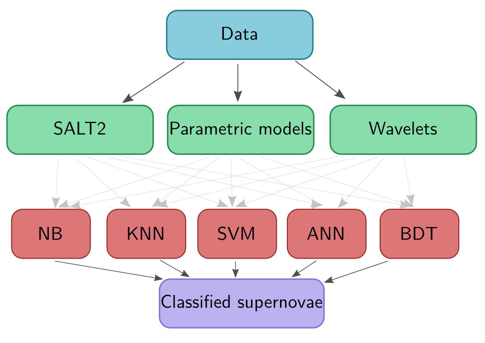

snmachine¶
Welcome to version 1.0 of snmachine! As described in Lochner et al. (2016), this is a flexible python library for reading in photometric supernova light curves, extracting useful features from them and subsequently performing supervised machine learning to classify supernovae based on their light curves. The library is also flexible enough to easily extend to general transient classification.
Usage Policy¶
This code is made available within the LSST DESC Collaboration. snmachine was developed within the DESC, using DESC resources, and so meets the criteria given in the DESC Publication Policy for being a “DESC product” (DESC Publication Policy). We are aware that the codebase might be useful within other collaborations and welcome requests for access to the code for non-DESC use. If you wish to use the code outside DESC please submit your request here.
Citation¶
If you use snmachine in your work please cite (BibTex.) Lochner, M., McEwen, J., Peiris, H., Lahav, O., Winter, M. (2016) “Photometric Supernova Classification with Machine Learning”, The Astrophysical Journal Supplement Series, 225, 31
Contributing to snmachine¶
We welcome developers! Simply fork it into your own private repository and submit a pull request when ready. You can contribute by adding new dataset-reading methods, new feature extraction methods or new classification algorithms. Please create an issue if you have any questions or problems with the code.